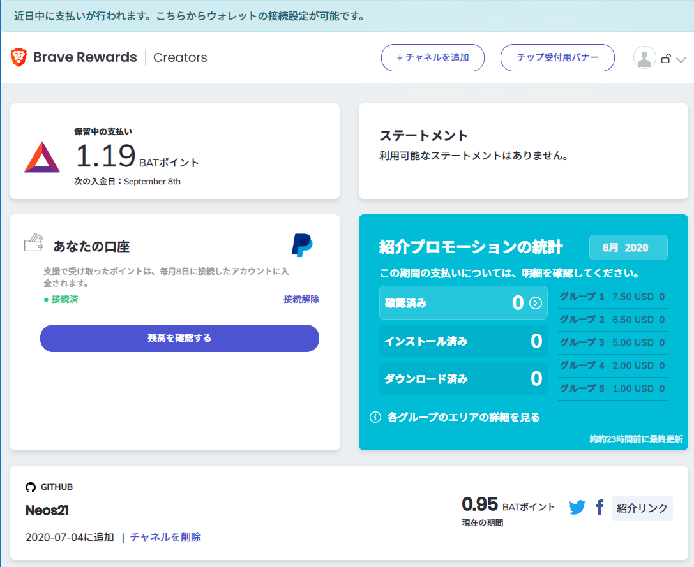
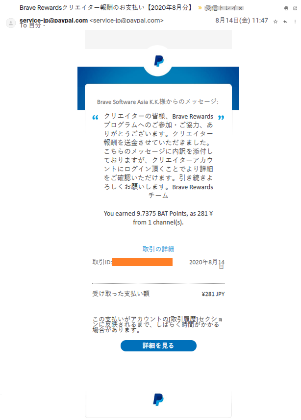

Brave ブラウザで集められる BAP (BAT ポイント) を換金できた
既存の広告をブロックし、ブラウジングにより BAT ポイント (BAP) を貯められる、Brave ブラウザ。海外では BAT (Basic Attention Token) という仮想通貨なのだが、日本では「BAT ポイント」というポイント扱いになっていて、BAT とは違いますよーと言われていた。
なんだよそれじゃあこのポイント集めても換金できないのかよ？と思っていたのだが、色々対応が進んでいて、なんやかんやで日本円に換金できたので、報告がてら紹介する。
目次
Brave Creators に登録する
ブラウジング中に稼いだ BAP を、ウォレットから直接日本円に換金する方法はないっぽい。
一方、Brave Creators に登録し、クリエイターへの寄付として受け取った BAP は、PayPal に入金されることが分かった。
というワケで早速 Brave Creators に登録する。
Brave Creators アカウントを作ったら、PayPal アカウントを紐付ける。
そして、Twitter か YouTube か GitHub あたりの、自分のアカウントをクリエイターページとして登録する。この認証には1日〜数日かかるので、認証が終わるまではしばらく待つ。
認証されると、Brave ブラウザでそのクリエイターページにアクセスした時に、Brave Rewards アイコンが活性化する。自分のアカウントの場合、GitHub のアカウントページなんかにアクセスしてもらうと、僕への寄付が出来るようなアイコンが出ているはずだ。

自分自身に寄付する
Brave Creators は、基本は皆様から自分への寄付を募る仕組みなのだが、現状は「自分自身への寄付」も、特に制限されていないようだ。「Brave ブラウザの利用者」を特定するような仕組みがないので、今後もそういうものなのかもしれない。
というワケで、Brave ブラウザで自分の登録したクリエイターページにアクセスし、Brave Rewards アイコンから寄付をすれば、自分のアカウントに BAP が届く。

毎月8・9日頃に PayPal に入金される
0.5 BAP 以上の寄付が集まると、翌月の8日〜9日頃に、PayPal に日本円として入金された。若干ラグがあったのだが、気にせず待てば良い。入金されると、PayPal に登録したメールアドレスに次のような感じでメールが届く。

何にも難しいことはなかった
Brave Creators に登録し、PayPal アカウントを紐付けるだけ。後は寄付を待つなり、自分自身で寄付するなり。
ホントにコレだけで BAP が日本円に換金されるとは思わなんだ。
BAP 自体が稼ぎづらく、寄付もあまり期待できないので、ごくたまにワンコイン未満の金額が貯まる「かもしれない」ぐらいのつもりでいたいところだが、Brave ブラウザがやろうとしているのは面白い試みだと思うので、コレからもウォッチしていく。
(最近ようやく PC 版で Brave Sync v2 がリリースされて、ブクマ同期機能とかが復活したのが最高。この調子で iOS 版の Sync 復活も頼むぜ〜)